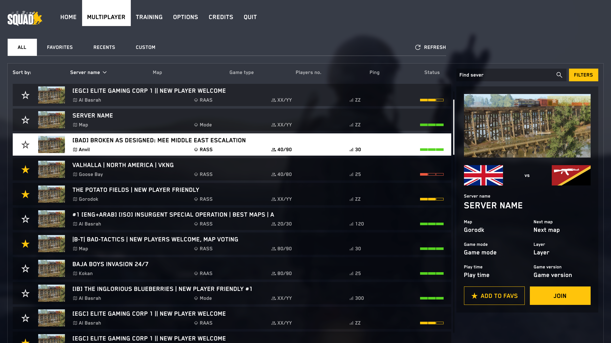
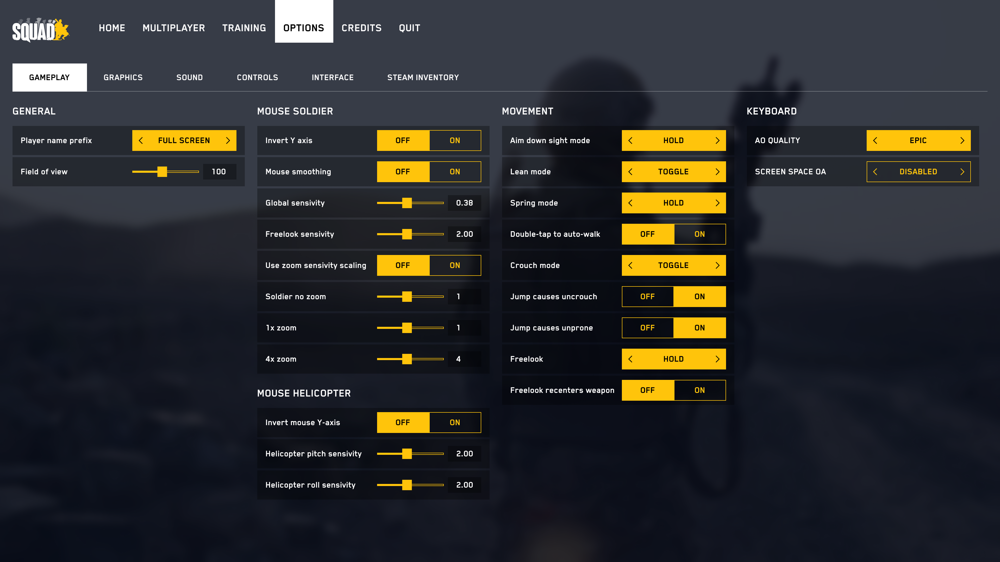
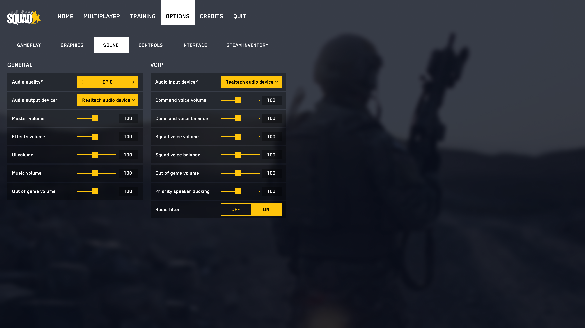
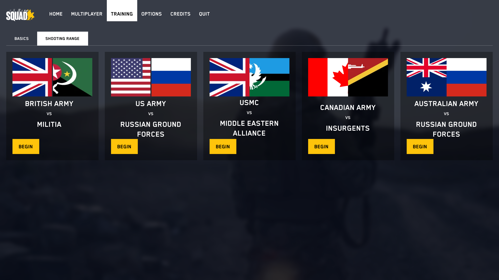

Squad
Zadaniem było stworzenie nowoczesnego UI dla menu gry squad. UI miał powstać w oparciu o istniejący UI i przyzwyczajenia graczy ale dostarczyć nowy, lepszy UX oraz nowoczesne rozwiązania UI.
Z elementów które nie mogły zostać naruszone to m.in. kolorystyka jak i rozkład elementów w opcjach.

Przeglądarka serwerów
W przypadku gry multiplayer, jest to najważniejszy ekran.
To z tego właśnie ekranu korzystają głównie korzystają gracze odwiedzając zarówwno swoje ulubione serwery jak wyszukując nowe, które mogą ich zainteresować ustawieniami rozgrywki.
Architektura informacji została podzielona na widok od ogółu do szczegółu, nie rezygnując przy tym z przyjętych standardów i przyzwyczajeń graczy.
Najważniejsze informacje pozostają zawsze widoczne, część jest dostępna przed dołączeniem do serwera, a część informacji uległa uproszczeniu do ikon.
Scoreboard
To ten element gry odpowiedzialny za nagrodzenie gracza. To tutaj może odnaleźć swój wynik i porównać z innymi graczami.
To z tego właśnie ekranu korzystają głównie gracze odwiedzając zarówno swoje ulubione serwery, jak i wyszukując nowe, które mogą ich zainteresować ustawieniami rozgrywki.
Gra Squad jest także grą drużynową, wymagającą kooperacji, stąd ważne informacje dotyczące tego, jak poradził sobie każdy z oddziałów osobno na polu bitwy.
Opcje
Nikt nie lubi, a konieczne :)
Dobrze zaprojektowane UI opcji w grze komputerowej musi sprawić, że mówią one do gracza przyjaznym językiem (jego językiem) oraz upewnić się, że nie zagubi się w ich gąszczu.


